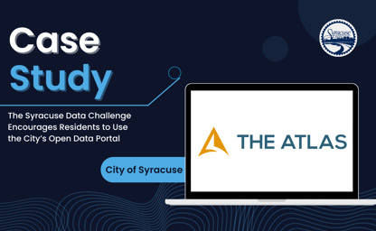
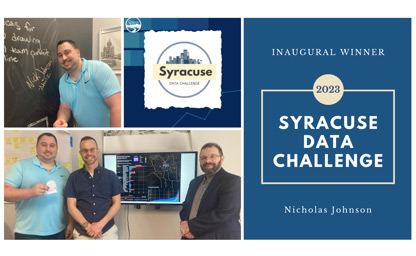

Ataviz Consulting Joins the CNY Conversations Podcast
Join Ataviz Consulting's founder, Nick Johnson, as he shares his expertise as a guest on the CNY Conversations Podcast, hosted by Jason Klink. Discussion points include the power of data analytics in driving business success as well as how Chat-GPT is becoming the face of AI and how it is changing the world around us.

Syracuse Data Challenge Case Study @ The Atlas
The City of Syracuse established the Syracuse Data Challenge to incentivize residents to create innovative projects using the city’s open source data. The challenge successfully generated awareness for the city’s open data portal and increased citizen participation in utilizing data for the public good.

Nick Johnson Wins the Inaugural Syracuse Data Challenge
We are thrilled to announce that our very own founder, Nick Johnson, has been selected as the first-ever Syracuse Data Challenge winner by the City of Syracuse! This past March, Nick utilized the Syracuse Public Art open dataset to create a visually stunning Tableau dashboard. We are proud of his hard work and dedication that earned him this recognition.